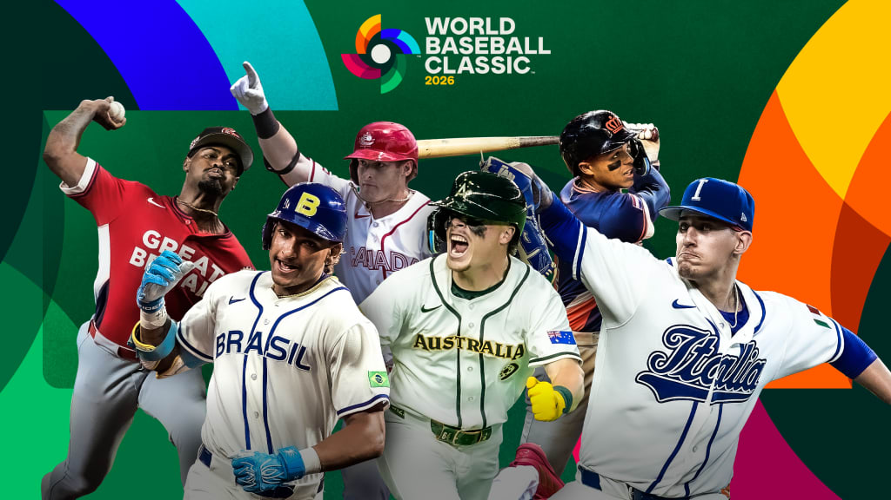

The World Baseball Classic

The 2026 World Baseball Classic is an international baseball tournament featuring 20 national teams competing from March 5 to March 17, 2026. It is the sixth edition of the event and showcases many of the world’s top professional baseball players representing their home countries. G ames are played in Tokyo, Japan; San Juan, Puerto Rico; Houston, Texas; and Miami, Florida. The tournament begins with pool play, where the 20 teams are divided into four groups of five teams. Each group plays a round-robin format, meaning every team faces the others in its pool. The top two teams from each pool advance to the quarterfinals, followed by a single-elimination bracket. The semifinals and championship game are held in Miami, making the event feel even bigger as the tournament reaches its final stages.
What makes the World Baseball Classic so exciting is that it combines elite baseball talent with national pride. Fans get to watch players they normally only see in Major League Baseball represent their countries in a different kind of environment. Countries such as Japan, the United States, the Dominican Republic, Puerto Rico, and Venezuela are often seen as strong contenders because of their deep baseball traditions and talented rosters. Japan entered the tournament as defending champion after winning the 2023 title, and the 2026 event continues to show how much the sport has grown across the world. The WBC creates memorable moments because the games feel intense, emotional, and meaningful for both players and fans.
I chose the World Baseball Classic as the focus of this page because baseball is one of my biggest interests. I enjoy how the sport combines strategy, statistics, and emotion. The WBC is especially interesting because it brings together different styles of play from around the world and creates matchups that you would never normally get to see in a regular season. It is also a great example of how baseball can connect people across cultures. For me, the tournament is one of the most exciting events in sports because it celebrates both competition and the global growth of the game.
What Makes the WBC Fun to Follow
- International teams and national pride
- Star players representing their home countries
- Unique matchups that rarely happen otherwise
- Single-elimination games later in the tournament
- The global growth and popularity of baseball